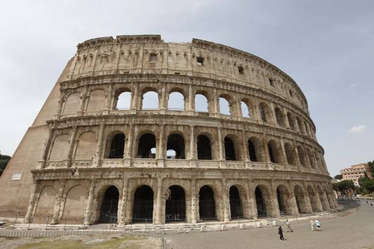
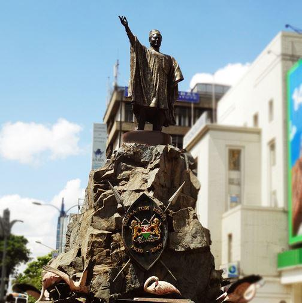
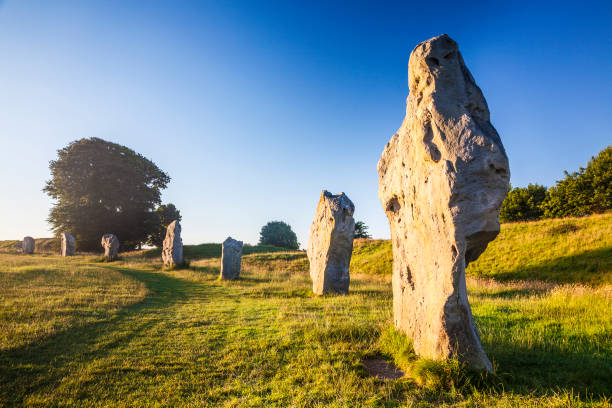

1 / 5

Colosseum
2 / 5

Tom Mboya Monument
3 / 5

Pyramids of Giza
4 / 5

Nasir al-Mulk Mosque
5 / 5

Avebury
When thinking about architecture, many visual images come to mind. The works of many are seen everywhere we go, from the average home to a New York skyscraper. As these buildings are fairly common to most of us, we forget to incorporate the work of our prehistoric man that gave us the foundation of early architecture.
Pre-historic monuments provide us with numerous amounts information about our past and how life existed in these prehistoric times. When comparing two great works from ancient times, we will determine the main reason for these buildings as well as rituals that were held and there excavations and discoveries.
Innovation in architecture is with no doubt extremely important, but preserving and restoring the old buildings is also important because those old monuments are the reflection of our history, they help us to understand and respect people who lived in different eras with different habits and traditions.